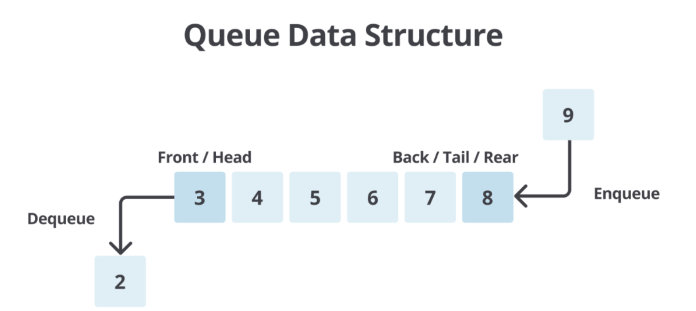

Queue#
QUeue atau dalam bahasa Indonesia yang berarti antrean adalah struktur data yang menyusun elemen-elemen data dalam urutan linier. Prinsip dasar dari struktur data ini adalah “First In, First Out” (FIFO) yang berarti elemen data yang pertama dimasukkan ke dalam antrean akan menjadi yang pertama pula untuk dikeluarkan.
Caranya bekerja adalah seperti jejeran orang yang sedang menunggu antrean di supermarket di mana orang pertama yang datang adalah yang pertama dilayani (First In, First Out). Pada struktur data ini, urutan pertama (data yang akan dikeluarkan) disebut Front atau Head. Sebaliknya, data pada urutan terakhir (data yang baru saja ditambahkan) disebut Back, Rear, atau Tail. Proses untuk menambahkan data pada antrean disebut dengan Enqueue, sedangkan proses untuk menghapus data dari antrean disebut dengan Dequeue.

Queue memiliki peran yang penting dalam berbagai aplikasi dan algoritma. Salah satu fungsi utamanya adalah mengatur dan mengelola antrean tugas atau operasi secara efisien. Dalam sistem komputasi, ia digunakan untuk menangani tugas-tugas seperti penjadwalan proses, antrean pesan, dan manajemen sumber daya.
Berikut beberapa fungsi Queue pada bahasa pemrograman python beserta contoh penggunaan fungsi-fungsinya:
class Queue:
def __init__(self):
self.items = []
def is_empty(self):
return len(self.items) == 0
def enqueue(self, item):
self.items.append(item)
def dequeue(self):
if not self.is_empty():
return self.items.pop(0)
else:
return "Queue is empty"
def size(self):
return len(self.items)
# Contoh penggunaan
antrian = Queue()
# Menambahkan elemen ke dalam antrian
antrian.enqueue("Pelanggan 1")
antrian.enqueue("Pelanggan 2")
antrian.enqueue("Pelanggan 3")
# Melihat ukuran antrian
print("Ukuran antrian:", antrian.size())
# Mengambil elemen dari antrian
print("Panggilan ke kasir:", antrian.dequeue())
# Melihat ukuran antrian setelah panggilan pertama
print("Ukuran antrian setelah panggilan pertama:", antrian.size())
Ukuran antrian: 3
Panggilan ke kasir: Pelanggan 1
Ukuran antrian setelah panggilan pertama: 2
# study kasus pelayanan antrian rumah sakit
class Queue:
def __init__(self):
self.items = []
def is_empty(self):
return len(self.items) == 0
def enqueue(self, item):
self.items.append(item)
def dequeue(self):
if not self.is_empty():
return self.items.pop(0)
else:
return "Queue is empty"
def size(self):
return len(self.items)
antrian = Queue()
while True:
print("menu\n1. daftar\n2. pasien yang akan dipaggil\n3. pasien di panggil dokter\n4. pasien yang terakhir datang\n5.mengecek antrian\n6. keluar")
pilihan = int(input("masukkan pilihan lu: "))
if pilihan == 1:
person = input("masukkan nama anda: ")
antrian.enqueue(person)
elif pilihan == 2:
print(f"panggilan selanjutnya adalah {antrian.items[0]}")
elif pilihan == 3:
if not antrian.is_empty():
homosapiens = antrian.dequeue()
print(f"pasien atas nama {homosapiens} silahkan masuk!👌")
else:
print("Gak ada pasien pak!🤪")
elif pilihan == 4:
if not antrian.is_empty():
print(f"pasien dengan antrian terakhir {antrian.items[-1]}")
else:
print("tidak ada antrian!")
elif pilihan == 5:
if not antrian.is_empty():
print(f"antrian sebanyak {antrian.size()}:\n{antrian.items}")
else:
print("tidak ada antrian!")
else:
break
menu
1. daftar
2. pasien yang akan dipaggil
3. pasien di panggil dokter
4. pasien yang terakhir datang
5.mengecek antrian
6. keluar
---------------------------------------------------------------------------
StdinNotImplementedError Traceback (most recent call last)
Cell In[2], line 26
22 antrian = Queue()
23
24 while True:
25 print("menu\n1. daftar\n2. pasien yang akan dipaggil\n3. pasien di panggil dokter\n4. pasien yang terakhir datang\n5.mengecek antrian\n6. keluar")
---> 26 pilihan = int(input("masukkan pilihan lu: "))
27
28 if pilihan == 1:
29 person = input("masukkan nama anda: ")
File ~\strukdat\Lib\site-packages\ipykernel\kernelbase.py:1402, in Kernel.raw_input(self, prompt)
1400 if not self._allow_stdin:
1401 msg = "raw_input was called, but this frontend does not support input requests."
-> 1402 raise StdinNotImplementedError(msg)
1403 return self._input_request(
1404 str(prompt),
1405 self._get_shell_context_var(self._shell_parent_ident),
1406 self.get_parent("shell"),
1407 password=False,
1408 )
StdinNotImplementedError: raw_input was called, but this frontend does not support input requests.
def createQueue():
q = []
return (q)
def enqueue(q, data):
q.insert(0, data)
return (q)
def dequeue(q):
data = q.pop()
return (data)
def isEmpty(q):
return (q == [])
def size(q):
return (len(q))
def queue():
q = []
return (q)
def enqueue(q, data):
q.append(data)
return (q)
def dequeue(q):
data = q.pop(0)
return (data)
def isEmpty(q):
return (q == [])
def hot_potato(n, k):
q = queue()
for i in range(1, n+1):
enqueue(q, i)
while not isEmpty(q):
hitungan = k - 1
while hitungan != 0:
enqueue(q, dequeue(q))
hitungan -= 1
pemain_keluar = dequeue(q)
print(f"pemainn telah {pemain_keluar} tereliminasi!!")
if len(q) == 1:
pemenang = dequeue(q)
return (f"pemenang adalah {pemenang}")
print(hot_potato(5, 2))